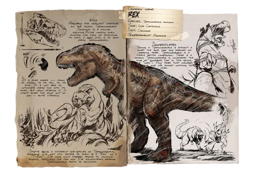
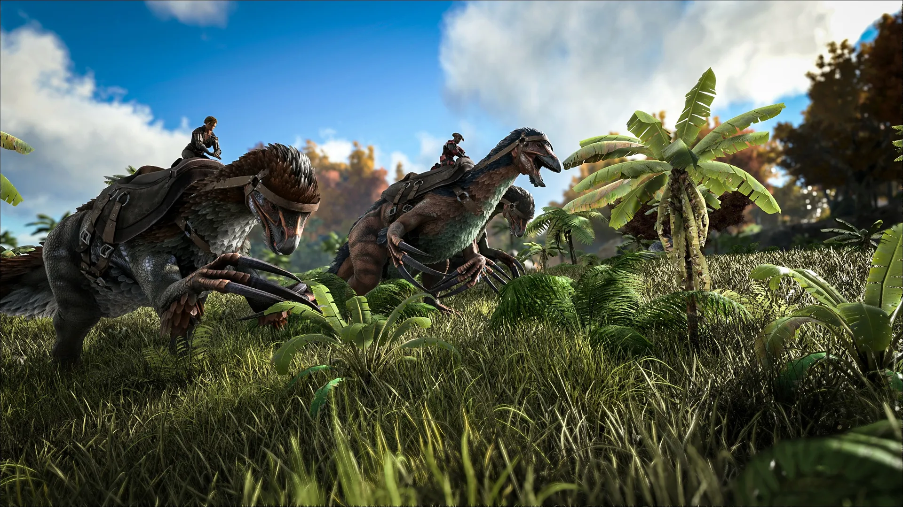
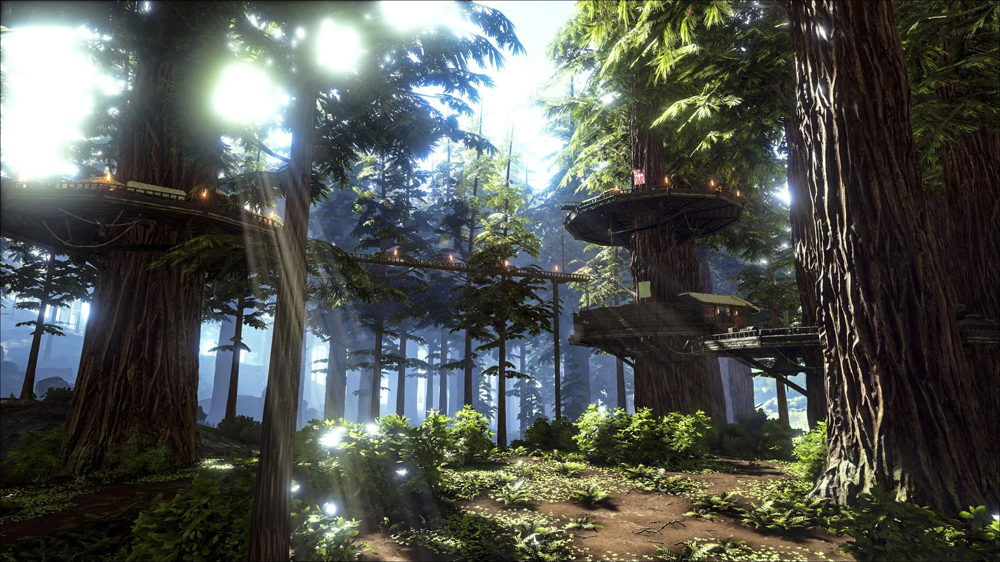
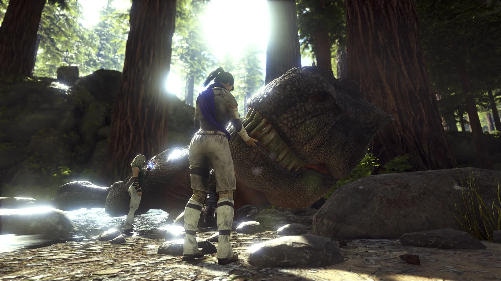
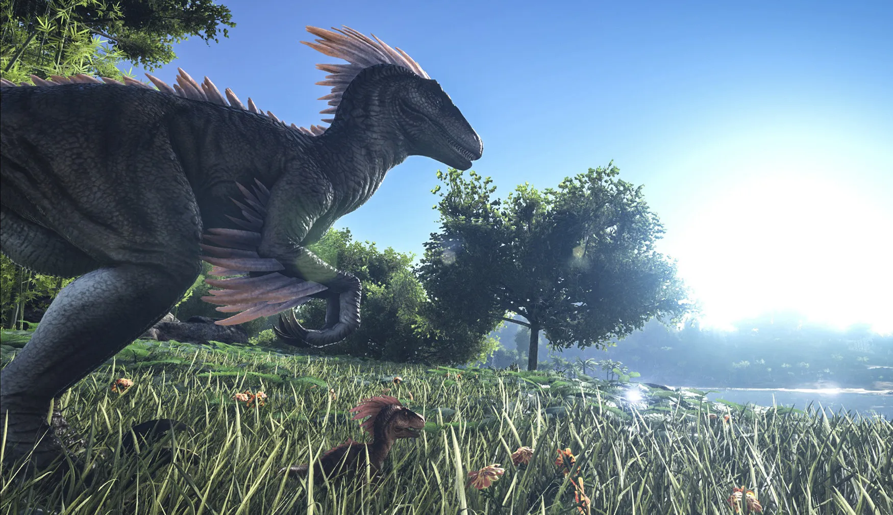
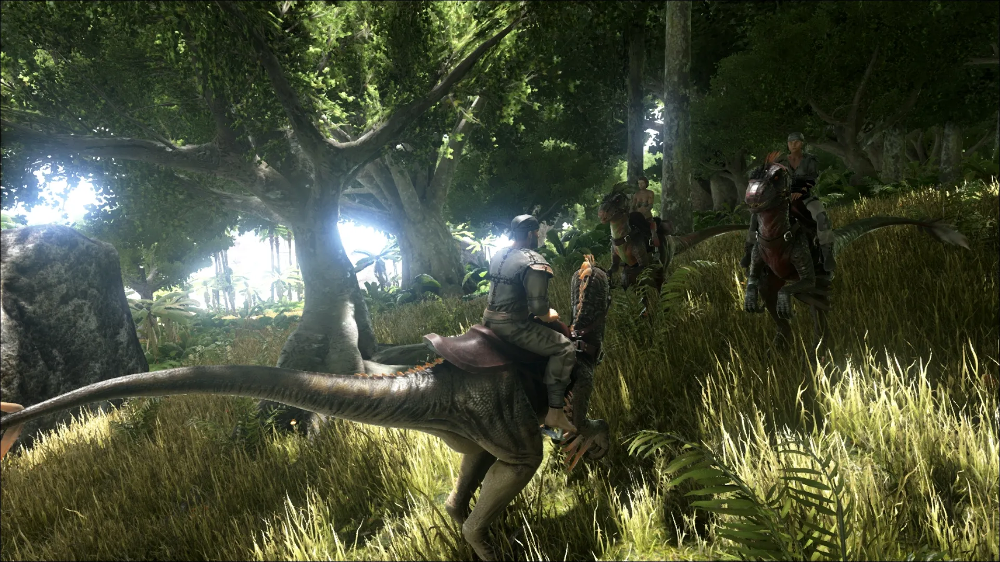

GRIETAMETA
 DisponibleLeague of LegendsTier list y builds
DisponibleLeague of LegendsTier list y builds
 DisponibleARC RaidersObjetos, misiones y mapas
DisponibleARC RaidersObjetos, misiones y mapas
 En construcciónZelda: Tears of the KingdomMapa, semillas y santuarios
En construcciónZelda: Tears of the KingdomMapa, semillas y santuarios
 NuevoPokémonPokédex, tipos y meta
NuevoPokémonPokédex, tipos y meta
 En progresoARKDinos, mapas y bases
En progresoARKDinos, mapas y bases
 NuevoAssassin's CreedLa saga y la guía de Unity
NuevoAssassin's CreedLa saga y la guía de Unity
 NuevoCall of DutyZombis de Black Ops 1 a 4
NuevoCall of DutyZombis de Black Ops 1 a 4
 PróximamenteResident EvilMapas, puzles y cajas fuertes
PróximamenteResident EvilMapas, puzles y cajas fuertes
 PróximamenteRustMonumentos y calculadora de raid
PróximamenteRustMonumentos y calculadora de raid
Todos los juegos9 juegos · 5 disponibles
DisponibleLeague of LegendsTier list y builds
DisponibleARC RaidersObjetos, misiones y mapas
En construcciónZelda: Tears of the KingdomMapa, semillas y santuarios
NuevoPokémonPokédex, tipos y meta
En progresoARKDinos, mapas y bases
NuevoAssassin's CreedLa saga y la guía de Unity
NuevoCall of DutyZombis de Black Ops 1 a 4
PróximamenteResident EvilMapas, puzles y cajas fuertes
PróximamenteRustMonumentos y calculadora de raid
¿Falta tu juego?Pídelo →
/
Notas de un supervivienteEl diario
El diario
del ARK
Cada criatura con su dosier: qué come, cómo se doma y para qué sirve. Apuntes de campo para no morir la primera noche.
835 criaturas · 12 mapas · 1 objetivo: sobrevivir
Todo ARK en un sitio

835 en la wikiCriaturasDoma, comida, montura y en qué mapa vive cada una
12 mapasMapasBiomas, cuevas, recursos y criaturas exclusivas
Por nivelEngramasQué aprender primero y qué cuesta fabricarlo
Dónde farmearRecursosMetal, cristal, perla, aceite… y con qué criatura
Bases y granjasGuíasCría, granjas automáticas y sistemas útilesElige tu próxima doma
Algunas de las más útiles, con su dosier. En la página de criaturas están todas, con sus variantes y filtros por mapa.
Doce ARK para sobrevivir
{{mapSel.n}} · {{mapSel.d}}
El orden de la historia
- The IslandDespiertas en la playa. Los tres obeliscos y los primeros jefes.
- Scorched EarthEl desierto, las wyverns y el Manticore.
- AberrationUn ARK roto bajo tierra y Rockwell.
- ExtinctionLa Tierra corrompida y los titanes.
- Genesis: Part 1La simulación de HLN-A y sus misiones.
- Genesis: Part 2La nave colonia y el final de la historia.
The Center, Ragnarok, Valguero, Crystal Isles, Lost Island y Fjordur son mapas gratuitos: juégalos cuando quieras.